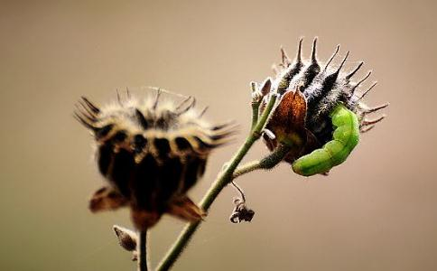

有位
猛兽、毒蛇、蝗虫之类都是因为感应到人心凶恶，才伤害人类。如果我们能够对它们
从前，
龙县令吓得说不出话来，自认为无法处理这样的灾害，因此跪倒在地，至诚祈拜天地，让蝗虫灭亡，人民可以继续
又有一个小女孩，买了一只苍蝇拍，看见苍蝇就拍，越拍苍蝇出现得越多，后来整间屋子都飞满苍蝇。小女孩的祖母是个念佛人，她打开窗户，大声念佛请苍蝇出去，果然苍蝇相继离去。这个小女孩颇有善根，看见念佛可以使苍蝇自动飞走，便停止再杀害苍蝇。否则她天天造下杀业，自己的
至于孙叔敖杀两头蛇的事情不可以学，因为并非人人都有他这样的存心与善念。如果不是心存好意，杀蛇就是造杀生罪业，这件事就会教人造杀生罪业。而且双头蛇是罕见的动物，所以孙叔敖杀了它，将它埋起来，不想再让其他人受害，它可能不再出现。但是猛兽、毒蛇、蝗虫之类的生物，不是杀了它们就能永除祸患，希望大家能发慈悲心，一同念佛，这些动物一定能有所感应，会自动离去，不会伤害任何人。
《
——原文见《印光大师文钞三编》上册 睡到半夜，蚊子钻进了蚊帐，在我耳边嗡嗡地飞，把我吵醒了。于是我便开灯掀起蚊帐用扇子请出蚊子，边扇边对蚊子说：“蚊子
早晨起来，看见桌上有一只小蟑螂。我想：咦，去年我不是请蟑螂菩萨搬家了吗？今年怎么又来了？难道是想我了？来看我？
话说去年，我家经常会有一些小蟑螂在桌上爬来爬去，我不想伤害他们，所以一直未用药，但又不知如何处理。一位师兄知道后便告诉我，他家曾有过许多蚂蚁在他家呆过三年多，他为此烦恼过许久，去年他试着用
今天看见蟑螂又来我家了，我又要开始请它们搬家了。于是，一大早我做完了二时临斋仪后，就按放生仪规的方式请蟑螂菩萨和蚊子菩萨搬家。
中午回去又做了一次。估计我得做一周左右才能把蟑螂菩萨与蚊子菩萨请走。我不想伤害它们，好歹它们亦是一条生命。因多生以来无明的造作今世堕为
如各位善知识家中与我家有同样的异类，亦与我一起如此来做吧！
续：自从此篇随笔写出后，想不到反响这么大。很多师兄家里也有异类，他们要我把详细的请异类搬家的仪规写出来。于是我我便抽空按照放生仪规的程序整理了一下，方便大家打印出来。不过我在做的时候，是用柔软语，就像与好朋友说话一样。比如念《
既是这类小生命打搅，必有其因果，蚂蚁、蟑螂、老鼠、蚊子等众生为什么来到你家？ 它们需要食物和住处，而且曾经与你结缘， 所以来你家。 想想，如果你是一个孤苦伶仃的人，到异国他乡， 未打招呼，借住他人屋檐， 别人用这个咒那个水希望你走， 你会如何想？ 更别说火攻毒药暴力驱逐！所以别忘了诵经念咒！
它们其实提供了一个让你布施的绝好机会，雪中送炭远远好过锦上添花，我们愿意大把地往功德箱塞钱，却不愿意容忍一点不便，让这些缺衣少食的众生有一点温暖，你的慈悲心何在？ 你的功德福慧何在？ 所以本人特别推荐布施。
《百业经》中
面对一切违缘障碍，都是你有一颗真正的慈悲心才能解决问题，才能谴除障碍，才能去除违缘，才能
梵香合掌：蟑螂菩萨，蚊子菩萨（或其它异类菩萨），我的法号叫**，这是我生活的家，家中需要有一个干净卫生的环境，我每天要打扫卫生，一不小心我怕会伤害到你们，这是我不想发生的。因此我想请你们搬家，你们从哪里来就到哪里去，我不会伤害你们。不过在你们搬家之前我要为你们做一件非常非常重要的事情，以此来改变你们今后的
一心奉请十方慈父，广大灵感
菩萨柳头
《大悲咒》： 南无喝啰怛那哆啰夜耶 南无阿唎耶 婆卢羯帝烁钵啰耶 菩提萨埵婆耶 摩诃萨埵婆耶 摩诃迦卢尼迦耶 唵 萨皤啰罚曳数怛那写 南无悉吉（栗）埵伊蒙阿唎耶 婆卢吉帝室佛啰楞驮婆 南无那啰谨墀 醯唎摩诃皤哆沙咩 萨婆阿他豆输朋阿逝孕萨婆萨哆那摩婆萨哆那摩婆伽 摩罚特豆怛侄他 唵阿婆卢醯， 卢迦帝，迦罗帝，夷醯唎， 摩诃菩提萨埵，萨婆萨婆摩啰摩啰，摩醯摩醯唎驮孕， 俱卢俱卢羯蒙， 度卢度卢罚阇耶，摩诃罚阇耶帝， 陀啰陀啰，地唎尼，室佛啰耶， 遮啰遮啰，么么罚摩啰，穆帝隶， 伊醯伊醯， 室那室那，阿啰（僧）佛啰
《心经》：观
《
南无甘露王菩萨摩诃萨 （三称）
香花迎，香花请，南无一心奉请尽
十方三宝释迦本师，弥陀慈父，宝胜如来，
往昔所造诸恶业，皆由无始贪嗔痴，从身语意之所生，一切罪障皆忏悔。（三遍）
罪从心起将心忏，心若灭时罪亦亡，心亡罪灭两俱空，是则名为真忏悔。（三遍）
南无求忏悔菩萨摩诃萨 （三称）
南无清凉地菩萨（三称）
离婆离婆帝，求诃求诃帝，陀罗尼帝，尼诃啰帝，毗黎你帝，摩诃伽帝，真陵乾帝，娑婆诃，（三遍）
唵萨斡巴钵 月（比）斯普吒 怛贺啰 斡资啰耶 娑诃（七遍）
蟑螂菩萨，蚊子菩萨，汝等不闻三宝，不解皈依，所以轮回三有，今堕畜生，我今授汝等
皈依佛，皈依法，皈依僧（三遍）
皈依佛，两足尊，皈依法，离欲尊，皈依僧，众中尊 （三遍）
皈依佛，不堕
汝等佛子，皈依佛竟，皈依法竟，皈依僧境
从今以往，称佛为师，更不皈依邪魔外道 （三遍）
从今以往，称法为师，更不皈依外道典籍 （三遍）
从今以往，称僧为师，更不皈依外道邪众 （三遍）
诸佛子等．
众生无边誓愿度，烦恼无尽誓愿断，法门无量誓愿学，佛道无上誓愿成 （三遍）
自性众生誓愿度，自性烦恼誓愿断，自性法门誓愿学，自性佛道誓愿成 （三遍）
蟑螂菩萨、蚊子菩萨，我现在要为你们称诵如来吉祥名号，这能让你们永离三途八难之苦，常为如来真净佛子。
南无多宝如来，南无宝胜如来，南无妙色身如来，南无广博身如来，南无离怖畏如来，南无甘露王如来，南无阿弥陀如来。（三遍）
蟑螂菩萨，蚊子菩萨，此七如来，以誓愿力，拔济众生，三称其名，千生离苦，证无上道，惟愿汝等，搬家以后，永不遭遇恶魔吞敢，网捕相加，获尽天年，命终之后，承三宝力，
合掌念佛：南无西方
南无阿弥陀佛（三称） 南无观世音菩萨（三称）
南无
回向：
愿以此功德，庄严佛
若有见闻者，悉发菩提心，尽此一报身，同生极乐国。
南无十方三世一切佛，一切菩萨摩诃萨，摩诃般若波罗蜜．
蟑螂菩萨、蚊子菩萨，你们现在可以回到老家去了，我就不留你们了，下次再也不用来看我了。阿弥陀佛（无数）
央视推荐驱赶蚂蚁、蟑螂而不杀生的方法（佛子们千万别忘了为他们念皈依、
蚂蚁怕酸味：一、家里的甜食摆没几分钟，蚂蚁大军立即来袭。以我从事糕饼业的经验，献给各位一项无毒无污染又安全有效的妙招：整粒的新鲜
蟑螂怕香味：一、神出鬼没的蟑螂，最爱隐身于掌管我们民生大计的厨房里。我的办法是将一块浴用香皂切成数小块，置于容器内注入清水，摆放在蟑螂出没的橱柜内，不出数日，打开橱柜将令您讶异于蟑螂的无影无踪，橱柜内还多了怡人的香味。想要效果持续，仅须定期补充香皂容器内的清水；二、蟑螂不喜欢
不用打杀蚊子的办法：一、把几粒维生素C和维生素B2泡在水里，将药水涂抹在皮肤上，会产生一种让蚊子不敢接近的气味；二、在室内挂上橘色的窗帘，或在灯罩上罩上橘色的玻璃纸，由于蚊子害怕橘红色的光线，能产生很好的驱蚊效果；三、在阳台上养几盆夜来香，蚊子的数量就会大大减少。因为夜来香浓郁的花香味是蚊子讨厌的。另外，水沟中最好不要有积水，这是蚊虫孳生的温床。
《善说海》的作者无著菩萨，就是利益众生最典型的例子。他老人家的传记中说：有一次，无著菩萨门口来了一位得严重畜癞病的乞丐，他的身躯早已失去光泽，其坐垫等物密密麻麻遍满了小虱子，大小便也完全失禁。众人见后不禁恶心、呕吐，纷纷要求他不要在此地久留。
无著菩萨目睹之后，大悲心顿时油然而生，眼泪簌簌落下。他把那又脏又臭的乞丐领进屋，还把那些沾满虱子的坐垫、衣服等物拿进来，将自己好一点的衣服马上送给他。接着，尊者开始用身体给小虱子们作布施——在虱子窝里一住就是两三天，以致浑身上下到处爬满虱子。
很多道友看见之后，觉得非常不忍心，祈请尊者停止此种行为，但尊者并未听从他们的苦劝，依然在行自他相换。无奈之下，他们把尊者的一位上师蒋阳顿有请来，劝尊者放弃此举，否则对身体有诸多不利。无著菩萨闻言，即以《本师传》中的一首偈颂作答：“仅依此肉身，亦能
我们也可以想一想，自己遇到可怜肮脏的乞丐时，是怎么样对待的？可能很多人嗤之以鼻，根本没有想这是众生、这是